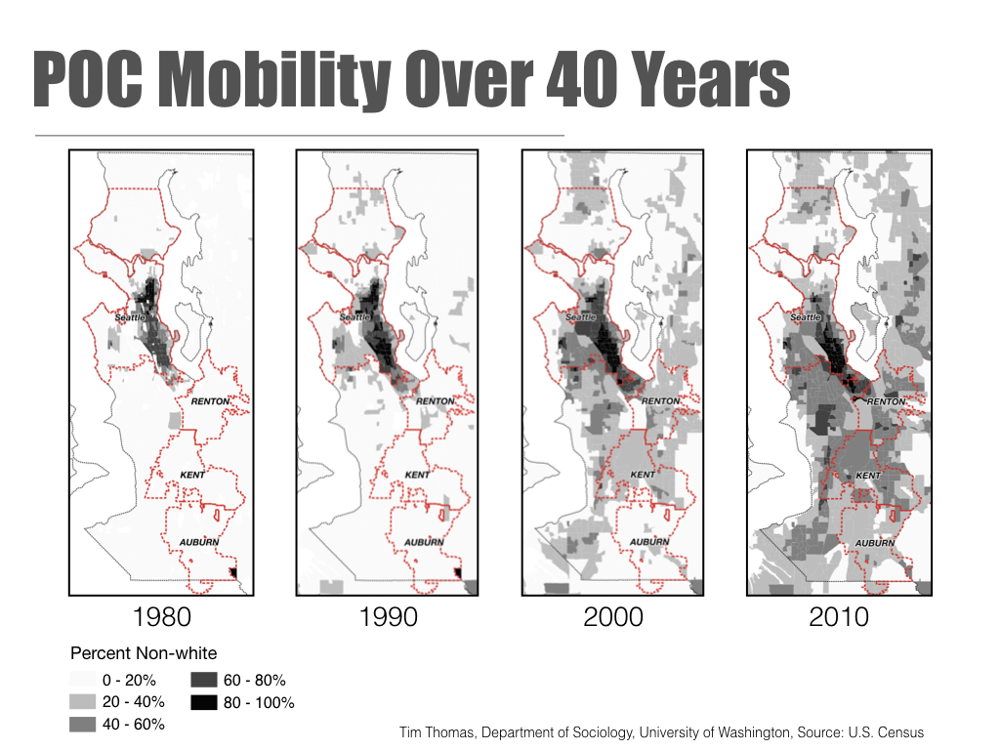

Washington Eviction Maps
An interactive map of eviction filings across four western Washington counties — King, Pierce, Snohomish, and Whatcom — by year and by race, at multiple geographic scales. Originally released by The Evictions Study in 2019.
What the map shows
The Evictions Study Map showcases data collected by our team as a dynamic and interactive visualization, showing the prevalence of eviction filings across four western Washington counties (King, Pierce, Snohomish, and Whatcom) by year and by race at multiple geographic scales. Demographic, income, and rent characteristics are also included to provide context and highlight the attributes of places where evictions tend to occur. Our demographic estimates show a massive racial disparity making evictions a civil rights issue related to contemporary discrimination in housing access and economic inequality linked to the legacies of segregation, policies, and practices directed against persons of color.
Note that data are not available for every county in every year, and estimates may slightly change as we process more data.
Summary of findings
Over the past decade, research has shown that eviction reinforces poverty and limits housing opportunities for the nation's most economically vulnerable. The mark of an eviction sets households on a path of housing insecurity that can prevent them from living in better neighborhoods, establishing beneficial networks and economic opportunities, and is one of the leading indicators of future homelessness.
Based on our race estimates, we find that eviction disparately impacts households of color, particularly adults who are Black. In Pierce County, about 7% of the population is Black. However, 1 in 6 Black adults (18% of the Black adult population) were named in an eviction filing from 2013 to 2017. One in eleven Black adults were named in King County.
What this map offers
This map shows the relative risk of an eviction for different racial groups within various neighborhoods in Whatcom, Snohomish, King, and Pierce counties. At the county level the map features all eviction filing counts for the entire state (race estimates are not available at the county level). Note that King County tract- and municipality-level data is limited to the years 2006, 2010, 2011, 2013, and 2017, and Snohomish County tract and municipality data is missing for 2011 and 2012 due to limited access to these records. For each year, our tract-level eviction data covers an average of 85% of all eviction filings — a sample size large enough to provide a realistic estimate of eviction risks and rates.
We also provide overlays for state legislative districts, historical redlining zones, and other census variables related to evictions and housing.
State- and neighborhood-level patterns
State-level trends
Looking at the Washington State 2017 total count of eviction filings at the county level, Pierce, Cowlitz, and Benton counties have the highest relative risk of eviction — the probability of an eviction filing in a county as compared to the probability of an eviction filing in the rest of the state. Their relative risks of 1.53 to 1.56 means the probability of an eviction filing occurring in one of these counties is 53% to 56% higher than the rest of the state. Counties with risks between 20% to 39% higher are Grays Harbor, Snohomish, Franklin, Columbia, Spokane, and Clark.
Neighborhood-level trends
Examining the 2017 tract relative risk of eviction (the probability of an eviction filing in a neighborhood compared to the probability of an eviction filing in the rest of the region), King County evictions concentrate in southern suburban towns while Snohomish and Pierce counties have concentrations in the urban cores and nearby outskirts of Everett and Tacoma. These areas are also the most racially diverse neighborhoods in these counties.
Examining tract-level changes from 2006 to 2017, King County evictions moved from South Seattle to South King County while Snohomish and Pierce county eviction risks stay relatively stable in place. When you set the "Race of Evicted Tenant" on the map to Black, you can see the greatest risk of eviction in 2006 concentrating in South Seattle while risk in 2017 moved further south. In Pierce County, some of the risk is situated in and around historically redlined neighborhoods.
The flow of King County eviction risk moving south also matches the mobility patterns of persons of color over the past 40 years.

Eviction flows following racial mobility patterns is not surprising because of the high rate of evictions among households of color, especially Black households. Our report on Washington State estimates that between 2013 and 2017, 1 in 6 Black adults in Pierce County and 1 in 11 Black adults in King County were named in an eviction filing. This high rate of eviction among Black and Latinx households is not simply due to lower incomes, but rather, it relates to the legacies of segregation that prevented many households of color from purchasing homes and participating in the building of the middle class through historical policies that subjugated and segregated persons of color. The dynamics of persistent urban segregation limit access to better neighborhoods, jobs, and class mobility and are reinforced through discrimination in housing access. As spaces gentrify, rising rents put all low-income renters in those neighborhoods at risk of displacement — especially Black and Latinx households.
What should be done
Given the severe racial disparity in evictions, the consequences of losing your home, rapidly rising rents, and the growing economic divide, we believe several policies should be enacted to protect citizens. Based on our observations of what works in other states, here is a short list to consider:
- Remove no-cause terminations.
- Introduce rent caps.
- Provide navigators to help tenants understand and deal with notices.
- Provide defense attorneys during the legal process.
- Strengthen laws that protect against source-of-income (SOI) discrimination.
- Seal eviction records and prevent them from being used in the rental application process.
Our goal in releasing these maps and reports is to follow in the footsteps of other collective and scholarly researchers and reveal previously unknown patterns of eviction while inspiring more research and discussion on the links of neighborhood change and housing precarity in the United States.
Since 2019
Several of these recommendations have since been enacted in Washington State, most notably the 2019 extension of pay-or-quit notice from 3 to 14 days and the 2021 statewide right-to-counsel program for low-income tenants. For the current evidence base and state-by-state policy tracking, see the research library.
How the map was built
This map uses data on eviction filings in Washington State collected by The Evictions Study. Filings were downloaded from the respective County Court Clerk's online portals covering a majority of the years 2004 to 2017. We then used Optical Character Recognition (OCR) software to scrape addresses and other information from PDF and TIF versions of court records and geolocated them using ESRI and SmartyStreets. For each year, we were able to geolocate about 85% of all files except for several missing years in King County. Eviction data for counties where less than 60% of all eviction cases have been geocoded are not included in this display.
Tenant race estimates are calculated using a Bayesian prediction model developed by Kosuke Imai and Kabir Khanna using the surname and geolocation of the tenant. These imputed estimates produce some possible uncertainty. However, we compared our estimates to actual intake data from the King County Bar Housing Justice Project (HJP) and find our rates are within a few percentage points.
All other data — including renting population, median household income, median rent, rent burden, and poverty rate — originates from the 5-Year American Community Survey (ACS) conducted by the US Census Bureau. This map displays the five-year estimates ending in the selected year (i.e., 2013–2017 estimates are used for the 2017 display). These estimates are not available for all years; 2006–2010 estimates are used for selections before 2010, while 2013–2017 estimates are used when 2018 is selected.
Eviction rate and relative-risk estimates for a given race are calculated using the estimated number of renting households recorded in the ACS. If fewer than 100 renting households are recorded within any given census geography, or if the margin of error for the estimated population of renting households is larger than the estimate itself, these estimates are labeled "N/A." Eviction rate represents the number of evictions within a given census geography divided by the estimated number of renting households. For any given race, the relative risk of eviction is based on the rate of evictions among renting households within each census geography divided by the rate of evictions across the entire study area.
For current methodology
ERN's present-day methodology — five-stage pipeline from court filing to research-ready dataset, including updates to the demographic-estimation and deduplication steps since 2019 — is documented on the methodology page.
People and institutions behind the 2019 release
This interactive map interface was created by Alex Ramiller with app development and web-hosting support by Ott Toomet. Data development and feedback was provided by Tim Thomas, Ian Kennedy, and Jose Hernandez. The Evictions Study would not be possible without the generous support of Bill Howe and the Cascadia Urban Analytic Cooperative, the University of Washington eScience Institute, the University of Washington Center for Studies in Demography and Ecology, The University of California at Berkeley Center for Community Innovation and the Urban Displacement Project, Enterprise Community Partners, The King and Snohomish County Bar Association Housing Justice Project, The Washington State Office of Civil Legal Aid, The Law Advocates of Whatcom County, John Stovall, The Public Justice Center in Baltimore, The Baltimore City Sheriff's Department, Professor Malcom Drewery at Coppin State University, Professor Meredith Greif at Johns Hopkins University, and Linda Morris at the ACLU.